摘要
随着近年来我国资本市场的发展和证券交易规模的扩大，越来越多的资金投资于证券市场，与此同时市场价格的波动也十分剧烈。市场的波动对于人们风险收益的分析、股东权益最大化和监管层的有效监管都有着至关重要的作用，
因此研究证券市场波动的规律性，分析引起市场波动的成因，是证券市场理论研究和实证分析的重要内容，也可以为投资者、监管者和上市公司等提供有迹可循的依据。
针对问题1，
第1问要求在附件数据的分析和处理过程中补全数据，结合实际生活中，存在股票停盘的情况，
我们认为缺失值为前八支股票中最后一个成交量，可以通过灰色预测模型进行分析。
第2问确定选股方案和投资组合方案，总体原则为：风险最小化，利益最大化。
可以通过主成分分析，选取十只股票为被解释变量，将各指标量化，进行降维处理，之后进行聚类分析。
针对问题2，
我们建立基于秩和比的综合评价模型，根据公式（5-2-2）计算各个股票的WRSR值，再由熵权法计算原始矩阵的权重系数以及加权秩次。
最后根据计算结果，列出WRSR值的列表，确定分档排序的界限，对各影响因素进行分档排序，确定分布直线回归方程WRSR=-0.3844+0.1768*Probit，对股票影响进行分级评估（分级情况见表5-2-2）。
针对问题3，
本文需要求出当前指数波动，并以此预测未来一年波动指数。可以通过基于PCA的GCS-BP网络进行预测研究，用主成分分析对数据进行降维处理，消除数据冗余，然后用高斯扰动的布谷鸟算法对 BP 神经网络的初始连接权值和阈值进行优化，最后将新建的 PCA-GCS-BP 预测模型用于股票价格预测。
最后，根据我们的预测结果，给出合理的投资建议和策略。
一、问题重述
经过30年的快速发展，中国证券市场在多方面取得了举世瞩目的成就，对国民经济的资源配置起着日益重要的作用。
随着近年来我国资本市场的发展和证券交易规模的不断扩大，市场价格的波动也十分剧烈，而波动作为证券市场中最本质的属性和特征，
对于人们风险收益的分析、股东权益最大化和监管层的有效监管都有着至关重要的作用，因此研究证券市场波动的规律性，分析引起市场波动的成因，
是证券市场理论研究和实证分析的重要内容，也可以为投资者、监管者和上市公司等提供有迹可循的依据
问题一：
在附件数据的分析和处理的过程中，对缺损数据进行补全，并通过建立模型，给出合理选股方案和投资组合方案。
问题二：
尝试给出合理的评价指标来评估问题一中的模型，并给出分析结果。
问题三：
通过附件股指数据和补充的数据，对当前的指数波动和未来一年的指数波动进行合理建模，并给出合理的投资建议和策略
二、问题分析
2.1 问题1的分析
首先，第1问要求在附件数据的分析和处理过程中补全数据，结合实际生活中，存在股票停盘的情况，
我们认为缺失值为前八支股票中最后一个成交量，可以通过灰色预测模型进行分析。
第2问确定选股方案和投资组合方案，总体原则为：风险最小化，利益最大化。可以通过主成分分析，选取十只股票为被解释变量，
将各指标量化，进行降维处理，之后进行聚类分析。
2.2 问题2的分析
问题2属于评价与决策类问题，此类问题一般用层次分析法、秩和比法等评价模型，其中层次分析法主观性较强。
因此，我们可以建立基于秩和比的综合评价模型。在基于秩和比的评价过程中，可以对股票进行打分，根据得分的分数由高到低进行排序，通过确定分档排序的界限。
2.3 问题3的分析
问题3首先需要求出当前指数波动，并以此预测未来一年波动指数。可以通过基于PCA的GCS-BP网络进行预测研究。
最后，根据我们的预测结果，给出合理的投资建议和策略。
三、模型假设
1.假设题目所给的数据真实可靠；
2.假设文中所引用的文献和结论均正确可靠；
3.假设各因素间无相互影响；
4.假设附件中十只股票可以代表实际股市。
五、模型的建立与求解
5.1 问题1的解答
通过对于附件数据的观察，本文补全了前八支股票中最后一个数据。
本文利用灰色预测分析补全，并通过因子分析或者主成分分析对现有数据进行分析，通过降维处理，对其进行有效组合 ，从而得到合理选股方案和投资组合方案。
5.1.1 灰色预测模型
设X(0) (k)为一非负单调的原始时间序列第期的值。
首先，我们采用依次累加的方法弱化原始时间序列的随机性，从而得到X(1) ,对X(1) 建立如下一阶线型微分方程：
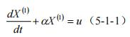
得到灰色模型GM(1,1)，求解预测值：
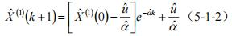
在模型预测的过程中，我们将原始数据进行累加处理，求解得到的是累加后的预测值，
所以若想求得真是的预测值，则需要在进行累减处理，将GM(1,1)模型所求得的数据X(1) (k+1)进行累减，还原为真实的预测值X(0) (k+1)，则：
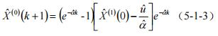
本文通过灰色预测模型，对数据进行了补全，具体见表5.1.1
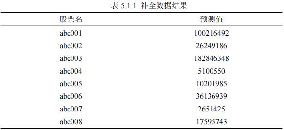
同时，我们还对拟合效果进行了评价，八只股票拟合效果见图5.1.1
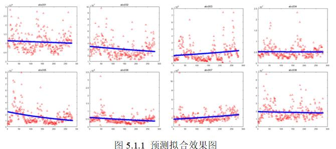
5.1.2 基于聚类分析的选股策略
聚类分析是解决定价影响因素细分问题的常用方法之一，是基于事物本身特性研究个体的分类方法。聚
类分析的原则是在划分后的各子类中，同一类的个体有非常大的相似性，不用类的个体有着明显的差异。
本研究中，运用聚类分析的思想方法研究选股策略是不需要提前拟定分类标准的，人为因素不会再聚类过程中进行任何干扰。
此方法能保证完全从预处理后的样本数据的角度综合分析各个属性，最终分类的结果可以充分体现各类因素的特征和区别。其流程见图5-2-1。
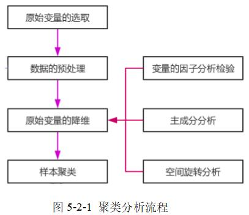
1.原始变量的提取
从问题出发，选择十只股票作为原始变量，并对变量类型和储存类型进行定义。
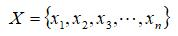
这里xi 代表附件数据中的十只股票，同时还可以考虑外生变量如消费者偏好、国家政策扶持。
2.原始变量的降维
出于尽量全面了解事物信息的目的，大多数研究者往往会对事物相关的众多属性因素进行大量观测，并通过统计分析收集到大量数据来探索目标事物的规律。
众多变量、大样本的确能够在很大程度上展现出目标事物全面丰富的信息，但是变量间的相关性会对问题的分析产生很大的干扰。相反，单独对各个变量进行分析又容易陷入局限性的误区，不能从整体上把握目标事物的特征，这样非常容易得出局限且偏颇的结论。
所以，有必要寻找一种技能减少原始变量个数，又能尽量保留原始变量所包含信息的方法。本文利用降维的方法来选取具有代表性的变量。因子分析是降维的一种常用方法，其能够在具有相关性联系的变量中，
准确找到不能通过直接观测得到但对可观测变量的变化有一定支配作用的潜在因子。将相关性高的变量用同一因子表示，可以部分减少变量数量。本研究通过SPSS软件对原始变量进行降维。
3.样本聚类
利用降维后提取得到的主成分因子作为分类标准，对从附件中股票相关数据进行聚类并对聚类结果进行检验和评价。聚类结果理想，则进入货运线路定价影响因素的下一步细分；反之，则通过因子分析法寻找新的分类变量，作为重新聚类的输入。
4.子类定价影响因素描述
从各个分类变量的角度，对聚类的结果在各个分类变量上的统计特征做出描述并进行分析。适当合并形成一定规模的细分子定价影响因素，并对其进行具有现实意义的描述。
本研究使用SPSS软件实现聚类分析的过程。
5.1.2.1 原始变量降维
首先从附件数据中选取出降维前最初的原始变量，各原始变量的定义如下：
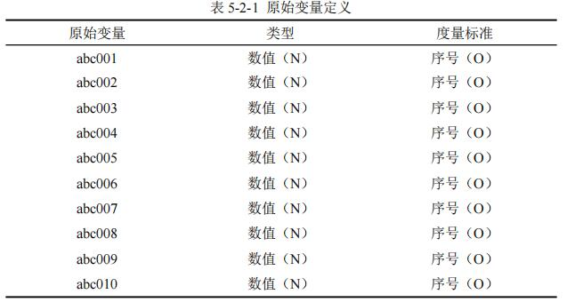
1.KMO检验及Bartlett检验
因子分析前，首先需要检验原始变量的适用性。在SPSS中因子分析里描述统计项里可以计算Kaiser-Metey-Olkin统计量，
并进行Bartlett球形度检验。
检验结果如表5-2-2所示。KMO值0.766以及Sig值小于0.05，表明原始变量间存在一定相对性，适合进一步进行因子分析
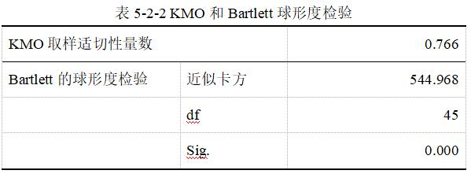
采用主成分分析法从原始变量中抽取因子，通过特征值大于1 的条件判断因子个数。
表5-2-3和图5-2-1显示，9个成分指标对于主成分分析的贡献能力略有偏差，前3个成分指标特征值均大于1，表明其对于主成分分析的贡献更为显著，
可以解释原来55.776%的信息，解释效果良好。
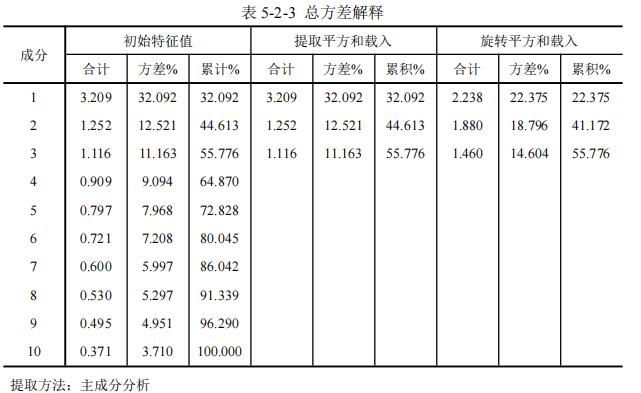
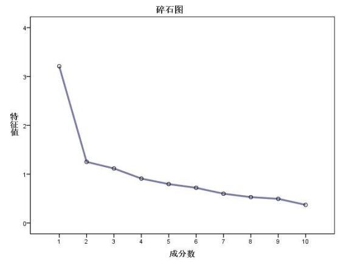
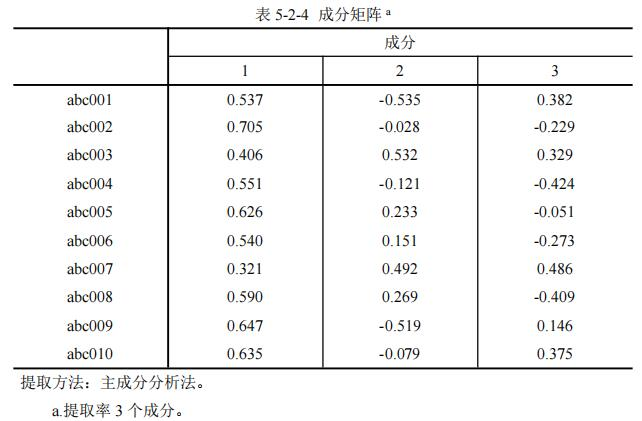
从成分矩阵表5-2-4可以看出，不同的原始变量在抽取出的主成分1、2、3中的载荷差异并不大，这不便于通过原始变量解释各主成分的含义。
所以，为了进一步描述各变量在主成分当中的归属情况，在此利用旋转指令中的最大方差法Varimax来进行处理。正交旋转法具有Kaiser标准化，能使每个主成分上具有最高载荷的变量数最小，从而达到简化主成分解释的目的。
采用最大方差法得到的选择成分矩阵和旋转空间中的成分如表5-2-5。
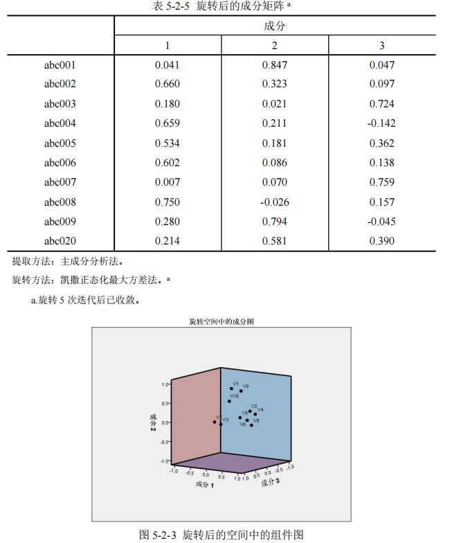
结合表5-2-5和图5-2-3容易看出，经过因子分析后得到的3个主成分较好的代表了个原始变量。其中，第1个主成分较好的描述了abc002，abc004，abc005，abc006，abc008这5项因素，
第2个主成分较好的描述了abc001，abc009，abc010这3项因素，第3个主成分较好的描述了abc003，abc007这2项因素。
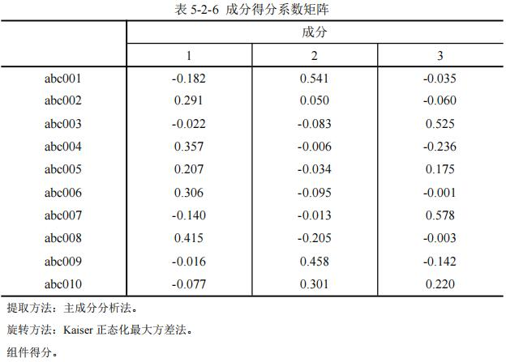
综上所述，经过降维后共得到3个主成分，这3个主成分分别从不同方面代表了原始的10个股票，降维效果良好。各原始变量指标在3个主成分上的成分得分系数矩阵如表5-2-6所示。
将提取出的主成分作为下一步聚类分析的输入变量。
5.1.2.2 样本聚类
经过原始变量降维得到主成分因子之后，下一步是进行聚类。聚类分析主要有两步聚类、快速聚类和层次聚类三种方法。考虑到样本观测量较大，
本研究选择处理速度更快的快速聚类法（K-means）进行聚类分析。
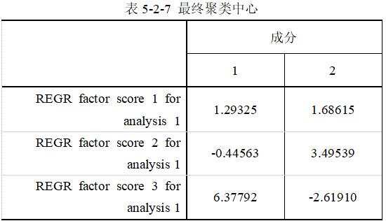
以3个主成分因子作为分类变量，通过SPSS软件中的K-means聚类法实施聚类。结合样本量因素，设置聚类数方面，这里拟将处理后样本分成2类。设置最大迭代次数100次，经过迭代运算后，SPSS输出的最终聚类中心表如表5-2-7所示。
各最终聚类中心间的距离如表5-2-8所示。
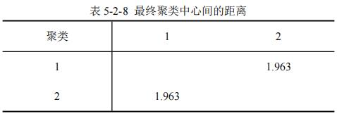
为保证个细分子类之间的差异性，聚类过程中同时进行了ANOVA统计量分析（方程分析），其结果如表5-2-9所示。
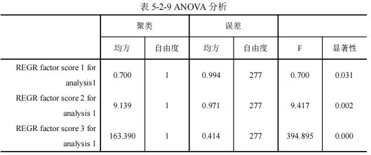
从类间均方程、类内误差均方差以及Sig值来看，此聚类过程效果理想，各子类间差异显著。最终的聚类分析结果中，各子类的样本数量如表5-2-10所示。
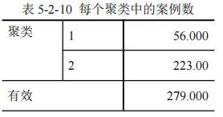
5.1.2.3 选股与投资组合方案
通过主成分分析法，我们可以看出，主成分1占比较大，即abc002，abc004，abc005，abc006，abc008这5股，其对市场影响较大，同时，根据聚类分析结果，其显著性较大，属于高风险高收益股票。而主成分2和主成分3占比相当，显著性也较小，
因此也可考虑三种成分股票混合购买，组合投资，同时兼顾风险与收益。
在长期投资中必须要保证收益也或风险的相对稳定,否则过大的收益波动很可能动摇投资者继续坚持原投资策略的信心。总体来说,基本价值和基本成长组合策略是一种相对最优的股票组合策略。从投资策略的理论依据来看,在评估策略的综合绩效中,
把风险调整后收益作为最重要的标准之一,充分权衡风险和收益的匹配则又运用了现代投资组合理论股票组合中涉及的所有单一投资风格的选股策略则又完全运用了基本分析方法。由于基本价值和基本成长组合策略将投资者的风险承受力限定在一个比较适中的水平并且完全不考虑市场时机的选择,
因此在本质上类似于介于积极与消极之间的策略。最后,该组合策略的绩效结果是对历史数据运用数学统计的方法而得出相关结论的,所以该策略具有良好的现实应用性,是可以信赖的。
5.2 问题2的解答 5.2.1 基于秩和比法的评价模型
5.2.1.1秩和比评价法原理及步骤
秩和比综合评价法进行评价指标参数辨识的基本原理为针对每类评价指标构成的一个n行m列数据矩阵，
首先通过秩转换，获得其无量纲统计量RSR或WRSR。然后运用参数统计分析的概念和方法，研究RSR或者WRSR的分布，以其对评价对象的优劣直接排序或分档排序，
从而综合评价各评价指标下相关因子对方案的信息。过程如下：
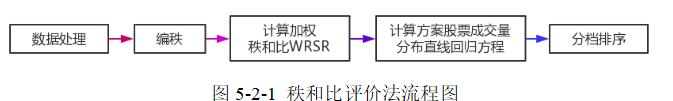
1.编秩
针对每类评价指标中n个选股方案和投资组合方案m个评价指标构成的n×m数据矩阵，
编出各个方案的总成交量对各个选股方案和投资组合方案的秩，运用非整次秩和比法将定量的指标值转换为半定量的秩次，所编的秩次除了最大指标值和最小指标值为整数外，
其余为非整数，如公式（5-2-1）。
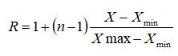
式中，R=(Rij )n×m 为秩次，n为样本数，X为原始指标值，
Xmin 、Xmax 分别为最小原始指标值和最大原始指标值。
2.计算加权秩和比WRSR
提出加权秩和比指标WRSR，计算各因素的加权秩和比WRSR
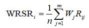
其中，Wj 为j个指标的权重系数，表现典型评价指标中各因素对方案的总成交量的不同影响程度。
3.编秩WRSR频率分布表，计算各组累计频数
计算概率单位，编秩WRSR频率分布表，列出各组频数f，计算各组累计频数；
确定各组WRSR秩次范围和平均秩次，计算累计频率P=AR/n；
将百分率转换为概率单位Probit，Probit为百分率对应的标准正态离差加5，
一般按照查询百分数与概率单位对照表，最后向下的累计频率按照1-1/4×n估计。
4.计算货运线路定价分布直线回归方程
以累计频率所对的概率单位Probit为自变量，
以WRSR值为因变量，计算直线回归方程，即WRSR=a+b×Probit，其中a、b为计算得到的常系数。
5.分档排序
将选股方案和投资组合方案分档排序：依据各分档情况下概率单位Probit值，
按照回归方程推算所对应WRSR估计值，然后根据常用的分档数对应的百分位数及概率单位表，对评价对象分档排序，实现选股方案和投资组合方案分级。
5.2.1.2 熵权法计算评价指标的权重系数
现有n个待评价项目，m个评价指标，构成原始数据矩阵R=(rij )n×m 。
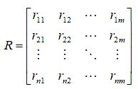
求取各个指标值权重的过程为：
1）先求取m个指标值的第i个项目的指标值的比重Pij 为
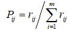
2）计算第j个指标的熵值ej 为
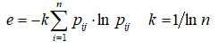
3）计算第m个指标的熵权Wj 为
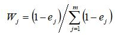
5.2.1.3基于秩和比综合评价法的影响因素分级
秩和比综合评价法首先利用秩和比加权法确定了各因素的影响程度，为了对选股方案和投资组合方案进行评价，
选取相关因素直方参数重构原始评价矩阵，其形式为
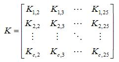
由于各因素评价指标为高优指标，因此定义了秩和比指标值WRSR整体描述了货运线路定价影响程度程度。
根据公式（5-2-2）计算各个方案成交量的WRSR值。再由熵权法计算原始矩阵的权重系数以及加权秩次。最后根据计算结果，列出WRSR值的列表，确定分档排序的界限，对各影响因素进行分档排序，确定分布直线回归方程，对方案成交量影响进行分级评估
5.2.2 选股方案和投资组合方案进行评价
结合前文所述的评估原理，对附件中各方案中股票历史交易数据的成交量进行评价。首先进行主成分分析，各主成分的特征量、单个贡献率、累计贡献率见前文表5-2-3（总方差解释）。其贡献了直方图如图5-2-2。
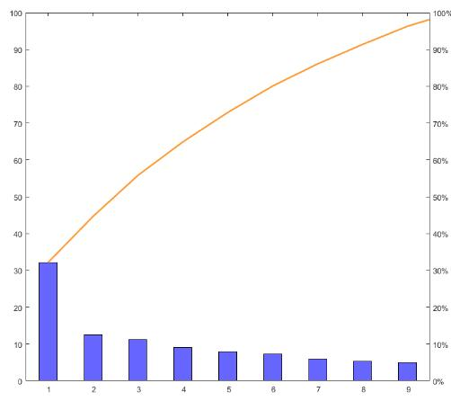
选取3个主成分代表原始10维指标，进行模糊聚类分析。
聚类的最佳分类数据根据评价准则Vxb 确定，原始数据分类数与Vxb 的关系如图5-2-3所示。
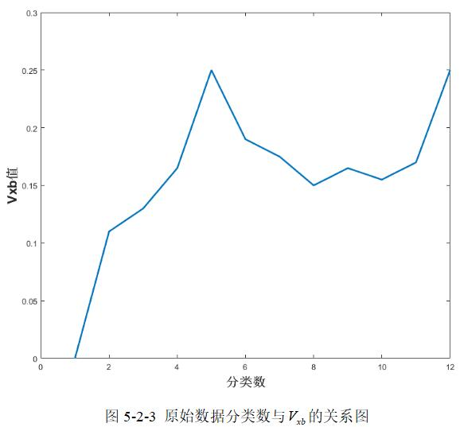
根据图5-3-2表明，在分类数为2时，取值最小，故将原始数据划分成2类主成分。根据主成分绘制数据的各项参数，
分析附件中各方案的股票历史交易数据的成交量。
主成分分析后2类成分的数值作为评价矩阵K，利用公式（5-2-2）计算其RSR矩阵，之后计算原始矩阵R的权重系数，
再根据公式（5-2-4）计算原始矩阵每类主成分评价指标的加权秩次比WRSR，取平均值做为每一个方案的总成交量的WRSR值，按照WRSR从大到小顺序列写表5-3-1，
并分别计算每日WRSR对应的概率单位。
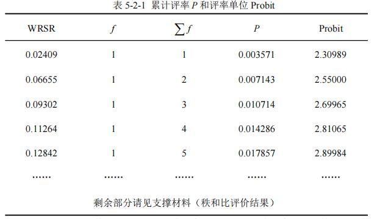
根据表5-2-1的数据，以Probit值为自变量，WRSR值为因变量，计算一元直线回归方程。计算结果为
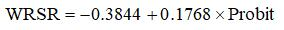
模型相关系数为0.9736接近于1，说明其线性拟合程度较高。经F检验，F=10257.5，P=0 < 0.05，说明具有统计意义。
将附件2的货运线的定价情况分档，根据常用的分档数对应的百分位数及概率单位表，将数据分成了3档，
分别为`P < 15.714%,Probit < 4.00`；`15.714% <= P <= 83.929%, 4.00 <= Probit <= 6.00`；`P > 83.929%,Probit > 6.00`。因此，定价分档如表5-3-2。
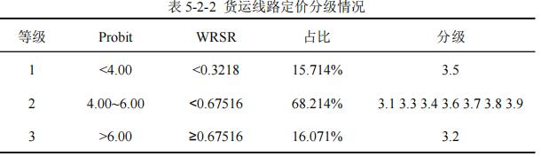
注：1表示相对影响程度较低；2表示相对影响程度中等；3表示相对影响程度较高。
5.3 问题3的解答 5.3.1 基于PCA的GCS-BP网络的股票预测研究
股票市场受到诸多因素的影响，是极其不稳定且非常复杂的系统，根据股票的历史数据建立一个准确的、稳定的预测模型，
对于研究者来说是十分困难的。传统的股票价格预测方法大都基于统计学，对于解决极其复杂的非线性问题具有一定的局限性，不能非常精确地预测股市。
本章是PCA-GCS-BP网络对股票价格进行预测，首先用主成分分析对数据进行降维处理，消除数据冗余，
然后用高斯扰动的布谷鸟算法对 BP 神经网络的初始连接权值和阈值进行优化，最后将新建的 PCA-GCS-BP 预测模型用于股票价格预测。
5.3.1.1 BP神经网络
神经网络是由大量的基本处理单元-神经元相互连接而成的网络。每个神经元接收输入信息,然后按照一定的转换规则输出信息。
常用的神经元模型如图5-3-1 所示：
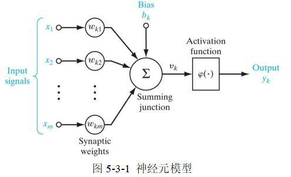
人工神经网络可以被看成是由连接、加法器和激活函数三要素组成的。
其中，x1 、x2 、……、xm 为输入信号wk1 、wk2 、……、wkm 为输入层神经元k到隐层神经元的连接权值，
θk 为隐层神经元的阈值，vk 隐层神经元到输出层神经元的连接权值，φ(·)为激活函数，yk 为神经元k的输出。
神经元的非线性特征由输出函数f表现，一般有多种激活函数可用。
BP神经网络的基本思想如图5-3-2所示：
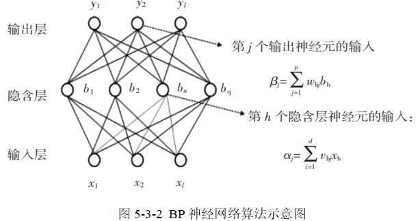
其具体实现过程如下：
1.数据输入：在(0,1)区间内随机初始化网络中所有节点的连接权wij 和节点的阈值θij ，
读入经过处理的重要影响因子的样本xk 和各方案的股票价格yk 。
2.模型训练：根据已知参数计算当前的各方案的股票价格yk ，并计算出输出层神经元的梯度项gj 和影藏层神经元的梯度项ek ，
计算各层神经元节点的误差信号，反向传播误差，修正权值和阈值，不断重复上述步骤，直到此神经网络的输出值达到要求的误差范围。
5.3.1.2 GCS-BP 神经网络
传统的 BP 神经网络的初始连接权值和阈值是随机选取的，
这样选取的初始连接权值和阈值易使网络陷入局部最优，针对这一缺点，考虑用基于全局搜索能力较强的加高斯扰动的布谷鸟搜索算法（GCS）优化其网络初始连接权值和阈值的改进算法。
基于高斯扰动的布谷鸟BP神经网络算法（GCS-BP）的步骤：
（1）产生n个随机鸟巢X(0) =[X1 (0) ,X2 (0) ,...,Xn (0) ]T ，
每个鸟巢代表 BP 神经网络的一组初始连接权值和阈值，按[Wij ,φij ,θj ,γk ]顺序编码。
中鸟巢的维数为：输入层节点数隐层节点数+隐层节点数+隐层节点数输出层节点数+输出层节点数。
将[Wij ,φij ,θj ,γk ]解码，计算每组鸟巢的适应度值，即每组鸟巢对应的预测误差，
得到当前最优的鸟巢位置Xj (0) ,j=1,2,...,n及最小适应度f。
（2）经过t次迭代后保留最优鸟巢位置，根据Xi (t+1) =Xi (t) +α⊕L(λ),i=1,2,...,n，
对其他鸟巢进行更新。每得到一组新的鸟巢位置，对其进行测试，与上一代的鸟巢位置X(t) =[X1 (t) ,X2 (t) ,...,Xn (t) ]T 进行比较，
用适应度值小的鸟巢位置替换适应度值大的鸟巢位置，从而得到一组较优的鸟巢位置X(t+1) =[X1 (t+1) ,X2 (t+1) ,...,Xn (t+1) ]T 。
（3）产生一组随机数r(r∈[0,1])，与淘汰概率Pa 进行比较，保留X(t+1) 中被发现概率较小的鸟巢。
同时对其他鸟巢按位置用更新公式进行更新，得到一组新的鸟巢位置，对新鸟巢位置进行测试，与上一代的鸟巢位置X(t) =[X1 (t) ,X2 (t) ,...,Xn (t) ]T 进行比较，
用适应度值小的鸟巢位置替换适应度值大的鸟巢位置，从而得到一组较优的鸟巢位置X(t+2) =[X1 (t+2) ,X2 (t+2) ,...,Xn (t+2) ]T 。
（4）对鸟巢X(t+2) 按照式子X(t+1) =X(t+1) +ε进行高斯扰动，得到新的鸟巢位置，
并与X(t+2) 进行比较，得到从而得到一组较优的鸟巢位置X(t+3) =[X1 (t+3) ,X2 (t+3) ,...,Xn (t+3) ]T 。
（5）在X(t+3) 中寻找适应度f最小的最优鸟巢位置Xi (t+3) ，判断f的误差是否达到要求的精度。
如果满足，则停止搜索，输出全局最优值f以及对应的最优鸟巢位置。
否则，返回步骤（2）继续搜索，满足算法跳出条件时终止。
（6）将最后得到的最优解进行解码，作为 BP 神经网络的初始连接权值和阈值。
5.3.1.3 神经网络的结构设计
网络拓扑结构的设计主要包括以下几个方面：
（1）输入层和输出层的设计
由于股票价格受到多个指标的影响，所以先利用第1问中主成分分析对输入数据进行降维，由10维数据得到2个主成分。然后根据得到的2个主成分确定输入神经元的数目。
用第一天的主成分作为神经网络的输入，第二天的收盘价作为网络的输出。对股票进行预测，常用到的预测方法有单步预测、多步预测和滚动预测，本文用的是单步预测。
（2）隐层的设计
在实验过程中，我们经常用到的是“试凑法”。方法是先取一个比较小的隐含层节点数，对网络进行训练，并记录相应的误差值．然后对节点数调整，依次增加，
对同一样本集进行反复的训练，直到误差满足精度要求，误差值最小的时候对应的隐层节点数即为所求。这种方法直观简单，所以本文用试凑法来确定隐层的节点数。经过多次试凑，隐层的节点数取 18。
（3）初始值的选取
本文用具有较强跳出局部极值能力的GCS 算法对 BP 神经网络的初始连接权值和阈值进行优化。
（4）学习率的确定
BP 网络的学习率以成正比的关系决定了网络权值阈值的修正速度．学习率的选择比较大的话,可能会导致网络发生震荡;
学习率选择比较小的话，网络的训练周期很有可能被拉长,甚至可能导致网络训练不收敛．我们通常会选择一个较小的学习率，因为较小的学习率有助于使得网络误差值不会跳出误差曲面表面，从而获得最小误差。
通常在[0.01,0.8]这个范围之间进行取值,网络仿真时取学习效率为0.05。
（5）误差的选择
股票预测模型好与差的的判断标准是该模型的运行时间和精确度．在进行网络仿真的时候，误差是一个很重要的指标，
通过误差可以直观地了解到网络的预测性能。
（6）激活函数的设置
输入层到隐含层的传递函数设定为logsig，隐含层到输出层的传递函数设定为purelin。
5.3.2 基于PCA的GCS-BP网络仿真
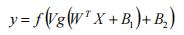
其中W和B1 分别为输入层与隐层之间的连接权值和阈值，V和B2 分别为隐层与输出层之间的连接权值和阈值。
取值与预测结果见附件，预测效果见下图
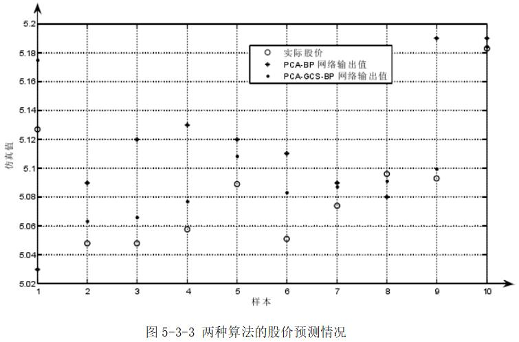
从图4-1可以看出，相比于PCA-BP算法的预测值来说，基于PCA-GCS-BP算法的股价预测值与实际股价的误差要小，更接近于实际股价，预测的精度有所提高。
仿真结果表明：基于PCA 的GCS-BP 神经网络的股票价格预测模型较PCA-BP模型具有较高的预测精度．加高斯扰动的布谷鸟算法GCS与BP神经网络相结合对股价进行预测有很好的效果，可以对股价在一定误差范围内进行预测。
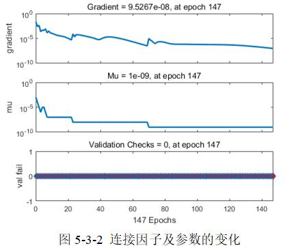
图5-3-2中gradient曲线，是我们借助梯度来更好的确定目标函数下降方向，其可以理解为单变量时的导专数。图中的mu是一个超参数，用来表明梯度方面，可以看做是在是在最初选取的样本方向是增加加速度来修正下降方向。
val fail代表检验失败次数，可以看到基本检验成功。
下图回归结果中，r代表相关系数，其绝对值越接近1，代表相关性越大，这四幅图分别代表训练样本、验证样本、测试样本和全部样本的回归及其相关系数。
可以看出，拟合效果非常好。
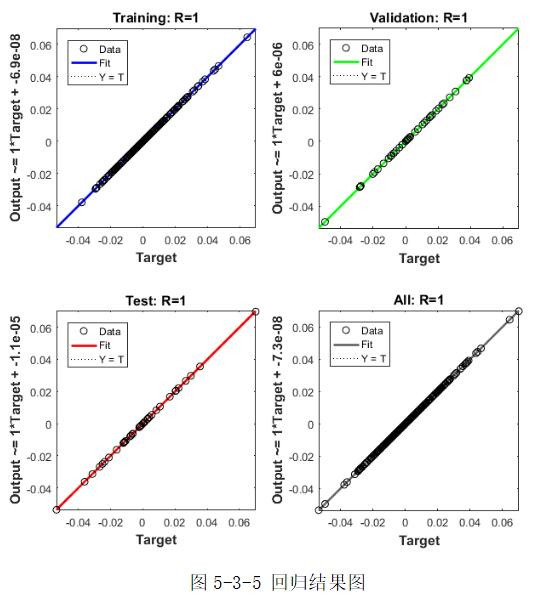
我们在对数据进行标准化、剔除和筛选等处理的基础上，利用附件所给的数据和收集到的数据进行神经网络模型的训练，
经过多次学习和训练，得到训练完成的BP神经网络预测模型，结合上面图示及分析，能够很好的拟合和预测结果。然后输出我们得到的预测值。
输出预测值：因为BP神经网络具有较强的适用性和容错能力，
所以利用历史数据建立训练模型，把灰色预测的数据结果带入训练好的模型中，就可以求出充分考虑历史信息的预测结果。其结果如附件所示。
六、模型的评价与推广
6.1 模型的评价 6.1.1 问题一的模型评价
（1）优点：聚类回归模型的优点就是直观，结论形式简明。根据主成分分析分析可以把九个变量归位三类主成分因子，分别为客服沟通状态、平台资源数量和支付结算需求，使其在因子分析后并不是对原有变量的取舍，
而是根据原始变量的信息进行重新组合，找出影响变量的共同因子，化简数据。同时它通过旋转使得因子变量更具有可解释性，根据模型检验得出的共同因子进行多元回归的准确性较高。总体回归清晰性高。
（2）缺点：在样本量较大时，要获得聚类结论有一定困难。由于相似系数是根据被试的反映来建立反映被试间内在联系的指标，而实践中有时尽管从被试反映所得出的数据中发现他们之间有紧密的关系，
但事物之间内在联系不大。
6.1.2 问题二的模型评价
（1）优点：秩和比法是一非参数法为基础，对指标的选择无特殊要求，始于各种评价对象；测方法计算用的数值是秩次，可以消除异常值的干扰，它融合了参数分析的方法，
结果别单纯采用非参数法更为精确，既可以直接排序，又可以分档排序，使用范围广泛。
（2）缺点：秩和比法是的排序主要依据是利用原始数据的秩次，最终算出的RSR值反映的是综合秩次的差距，而与原始数据的顺位间的差距程度大小无关，
这样在指标转化秩次时会失去一些原始数据的信息，如原始数据的大小差别等等。
6.1.3 问题三的模型评价
优点：基于PCA的GCS-BP神经网络算法兼备了CS 算法中选用参数少，搜索路径优，全局优化能力强的特点，
且在迭代过程中使其在得到一组较优的鸟窝位置之后，通过一个高斯扰动函数增加鸟窝位置的可搜寻范围，增强其活力。
6.2模型的推广
通过此次问题，我们利用了主成分分析聚类、灰色预测、秩和比评价模型、BP神经网络预测模型。主成分分析可以有效减少变量个数；秩和比模型是经典的评价类模型；
灰色BP神经网络模型，经过我们预测结果表明，其能够准确描述变化趋势；
这些模型的建立，都可以很好的应用到实际生活中去，这也体现了建模意义所在。
分析引起市场波动的成因，是证券市场理论研究和实证分析的重要内容，也可以 为投资者、监管者和上市公司等提供有迹可循的依据，还能更好的引导相关投资，推动相关市场的良性发展。
七、参考文献
[1] 张文彤，SPSS统计分析高级教程[M]，高等教育出版社：2013。
[2] 王霞，包启挺，聚类回归分析(CLR)在市场细分研究中的应用[J]，数理统计与管理，27(2)：338-346，2008。
[3] 周琪琪，邵振国，林韩，基于秩和比综合评价法的用户谐波危害分级评估[J]，电力电容器与无功补偿，39(5)：119-121，2018。
[4] 李永强，宋威，基于BP算法的股票价格趋势预测[J]，北方工业大学学报，25(1)：11-17，2013
[5] 陈俏，梁利利，谢丽娟，股票预测的研究进展[J]，学术探讨，10(6)：311-312，2012。
[6] 张德丰，神经网络应用设计[M]，北京，机械工业出版社： 3-4，2009。
[7] 李永强，宋威，基于BP算法的股票价格趋势预测[J]，北方工业大学学报，25(1)：11-17，2013。